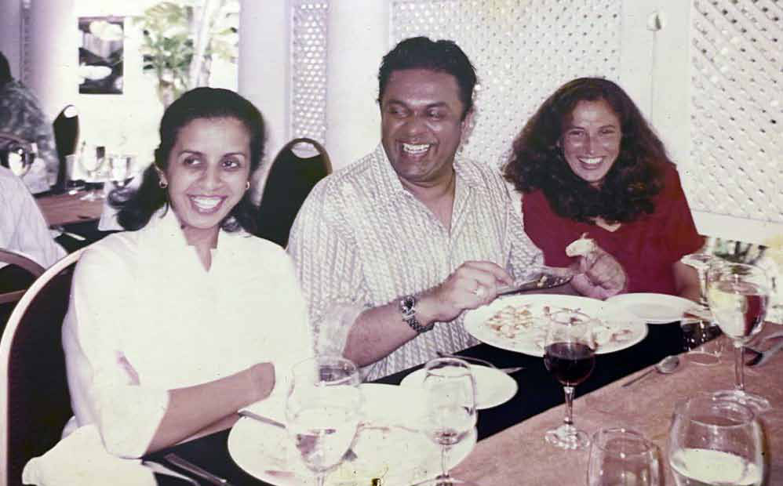
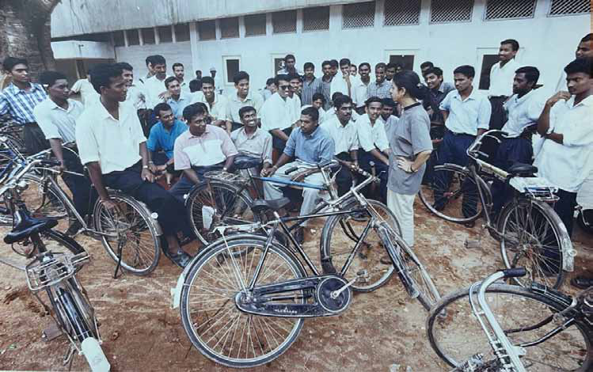
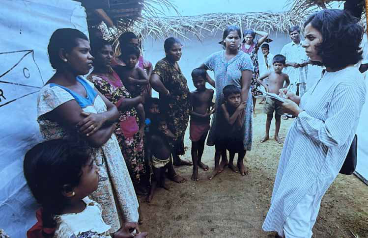
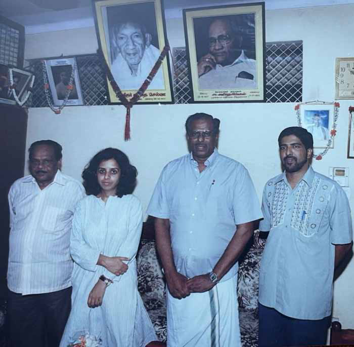
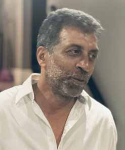

F ew journalists have navigated the turbulent landscape of South Asia with the depth and nuance of Nirupama Subramanian. A veteran reporter, foreign correspondent, and editor, she has spent over three decades chronicling wars, political upheavals, and human stories with fearless dedication. From the battle-scarred villages of Sri Lanka’s civil war to the tense streets of Pakistan under military rule and the shifting power dynamics across India and its neighbors, her reporting has illuminated some of South Asia’s most complex conflicts.
F ew journalists have navigated the turbulent landscape of South Asia with the depth and nuance of Nirupama Subramanian. A veteran reporter, foreign correspondent, and editor, she has spent over three decades chronicling wars, political upheavals, and human stories with fearless dedication. From the battle-scarred villages of Sri Lanka’s civil war to the tense streets of Pakistan under military rule and the shifting power dynamics across India and its neighbors, her reporting has illuminated some of South Asia’s most complex conflicts.
Jaffna Monitor hellojaffnamonitor@gmail.com 19 F ew journalists have navigated the turbulent landscape of South Asia with the depth and nuance of Nirupama Subramanian. A veteran reporter, foreign correspondent, and editor, she has spent over three decades chronicling wars, political upheavals, and human stories with fearless dedication. From the battle-scarred villages of Sri Lanka’s civil war to the tense streets of Pakistan under military rule and the shifting power dynamics across India and its neighbors, her reporting has illuminated some of South Asia’s most complex conflicts. As The Hindu’s correspondent in Sri Lanka (1995–2002), she covered the height of the war between the Sri Lankan state and the LTTE, capturing the struggles of civilians caught in the crossfire. Her book, Sri Lanka: Voices from a War Zone, remains a seminal work. In Pakistan (2006–2010), she reported on the rise of extremism, military rule, and the assassination of Benazir Bhutto—often working under surveillance. Her fearless dispatches earned her the Prem Bhatia Award (2008) for Excellence in Political Reporting and the Chameli Devi Jain Award (2009) for Outstanding Women Journalists. Beyond conflict reporting, Subramanian has held senior editorial roles at The Hindu and The Indian Express, shaping coverage on India’s national security, foreign policy, and the wider South Asian region. She expanded her investigative lens into true crime with Murder on the Menu, a gripping account of the Saravana Bhavan murder case. A Nieman Fellow at Harvard, she has also contributed to Track II diplomacy efforts, fostering dialogue between India, Pakistan, and Sri Lanka. With an unparalleled career spanning war zones, political capitals, and editorial boardrooms, Nirupama Subramanian remains one of the foremost voices on South Asia today. Her insights are shaped by years on the ground—listening to people, questioning power, and telling stories that matter. This is Jaffna Monitor’s exclusive interview with her. How do you view the new government in Sri Lanka led by Anura Kumara Dissanayake? As someone who has extensively covered Sri Lanka, do you believe they are willing to share power with the Tamils or offer any form of settlement that could help heal the wounds of the three-decade-long civil war? The election of AKD and the JVP marks a decisive break from the past, signaling a rejection of the old ruling elites. However, so far, his government has not made any major departures from previous governance practices. The budget revealed the constraints within which the government must operate, despite the election promise of renegotiating IMF conditionalities. They say election promises are made in poetry, but governance is in prose. AKD is following this pattern—he has no silver bullet. In Northern and Eastern Sri Lanka, where the JVP/NPP made history by winning a plurality of seats—the first for a non-Tamil party— expectations are high. So far, there have been no policy statements on Tamil issues, perhaps due to the government's preoccupation with the budget and economic concerns. However, the JVP cannot avoid this issue indefinitely. There has been speculation about a new constitution, and whether or not it will include the 13th Amendment. JVP, which opposed it with violence at the time it was introduced as a result
Jaffna Monitor hellojaffnamonitor@gmail.com 20 of the Indian intervention, has not been very clear about its current positioning on the issue. A small clue was its absence in the India-Sri Lanka joint statement when AKD visited Delhi. I am told it was omitted at the behest of the visiting side. The Amendment is the only instance in which the Sri Lankan polity has addressed Tamil political aspirations constitutionally. Its importance to India-Sri Lanka relations cannot be underestimated. You may have noted that Prime Minister Modi mentioned it in the press conference with President Dissanayake without using the words “13th Amendment.” His exact words were: “We hope that the Sri Lankan government shall fulfil the aspirations of the Tamil people and that they shall fulfil their commitment towards fully implementing the Constitution of Sri Lanka and conducting the Provincial Council Elections.” Provincial Councils are a provision of the 13th Amendment. Tamils always looked to India or the UN to put pressure on the Sri Lankan government. In the new world order, where international institutions such as the UN may no longer carry the same weight as they once did— particularly after their inability to stop Israel's genocidal war in Gaza— it is up to the government to act responsibly. Hopefully, the JVP will break away from its own past and do what is right. The Adani Group has withdrawn from the wind power projects in Mannar, and Indian Prime Minister Narendra Modi recently met with former Sri Lankan President Ranil Wickremesinghe in India. Do you see this as a sign of India's dissatisfaction with the new Sri Lankan government? Nirupama Subramaniyan (left) with Mangala Samaraweera, then Cabinet Spokesperson (middle), and journalist Susannah (Suzy) Price of the BBC in 2000.

Jaffna Monitor hellojaffnamonitor@gmail.com 21 I don't know if that was a signal from Delhi to the AKD government, but that is certainly how Mr Wickremesinghe would like it to be interpreted in Sri Lanka. You’ve extensively covered South Asia, particularly conflict zones. What do you see as the biggest challenge in reporting from areas deeply affected by political unrest and war? The biggest challenge is maintaining the trust of readers and viewers by ensuring that you are not biased toward one side or against the other. Being objective is not merely about getting a quote from one side and another from the other. Objectivity means presenting facts without getting lost in misinformation and “counter” facts. Identifying the real facts is the hardest task for a journalist in an age where people ask, “Whose truth?” Even a venerable institution like the BBC is struggling to uphold this standard and maintain its reputation in its coverage of the Israeli invasion of Gaza. Experts have suggested that India has lost some of its traditional allies in the region, with some attributing this to diplomatic missteps. How do you assess the current state of India's relations with its neighboring countries in the evolving geopolitical landscape? In your view, what is the trajectory of these relationships, and how are they progressing? Leaving aside Pakistan which is a different case, India has never had an easy relationship with its neighbors. With Sri Lanka, the first major issue was Colombo’s disenfranchisement Nirupama Subramanian speaking with Jaffna University students in Jaffna, 2000.

Jaffna Monitor hellojaffnamonitor@gmail.com 22 of the Malaiha Tamils, followed by the anti- Tamil riots and Tamil militancy in the north and India’s involvement in it. With Nepal—the only country in the region with an open border with India—relations have fluctuated. You may recall that India imposed a blockade on Nepal in the 1980s during Rajiv Gandhi’s tenure as prime minister. It was a terrible mistake, and history repeated itself in 2015-2016, just months after Modi took office and declared a Neighbourhood First policy. With Bangladesh, safe havens for militant groups active in India’s northeast were a constant concern until Sheikh Hasina’s election in 2008. Her responsiveness to Indian security concerns was one of the key reasons Delhi maintained good relations with her. Over the past two decades, China's growing competition with India for regional influence has added another layer of complexity to these dynamics. We have to understand how India's rise and self-perception as a regional power began with its intervention in East Pakistan and the creation of Bangladesh—a turning point for India and the region. At this time, the excessive securitization of relations means that India engages primarily with those running the government in neighbouring countries, with little regard for what the people of that country think of their leaders. This is one reason why India is disliked in Bangladesh. However, India's security remains a priority. It has to contend with two hostile nations, China and Pakistan, both of which covet Indian territory. India has fought four wars against Pakistan and one against China, with some situations in the last decade bringing it close to Nirupama Subramanian speaking with displaced people in Jaffna, 2000

Jaffna Monitor hellojaffnamonitor@gmail.com 23 another. These tensions are real and unlikely to disappear. Furthermore, all said and done, India is a large country surrounded by smaller nations. While these countries seek economic connectivity with India, they also do not want to be overwhelmed by its influence. Naturally, they leverage their relations with China to keep India from getting too confident. You have extensively written about and covered the Sri Lankan civil war. In your view, what were the key factors that contributed to the defeat of the LTTE? Conflicts don't arise out of thin air. The Sinhalese polity was short-sighted in its decision to disenfranchise the Malaiha Tamils and in enacting the Sinhala Only Act. The Tamil side made the mistake of believing that India would help them “do another Bangladesh” in Sri Lanka. The LTTE, in turn, From left to right: V. Anandasangaree (then TULF President), Nirupama Subramaniyan, Mavai Senathirajah, and Nadarajah Raviraj at the TULF office in Jaffna.

Jaffna Monitor
hellojaffnamonitor@gmail.com
24
made the mistake of thinking it could force
separation solely through war, to the exclusion
of everything else. It ignored many political
opportunities that its war had created—in
1987, in 1994, and in 2002. The LTTE also lost
the goodwill of Tamils in India, even in Tamil
Nadu, when it assassinated Rajiv Gandhi.
With your focus on Sri Lanka, how
do you assess the post-war progress
in terms of reconciliation and
development? What areas do you think
still need significant attention?
I don't think the progress has matched anyone's
expectations. Sri Lanka had to be dragged to
the task of reconciliation and remains reluctant
to address questions of missing persons, return
of land, accountability, and justice. After
the war ended, the government was more
interested in projecting its military victory to
consolidate itself politically.
How do you assess the current
political landscape of Tamil parties in
the Northern and Eastern provinces?
In your opinion, are they taking the
right approach in addressing the
rights and aspirations of the Tamil
community?
Since the war ended in 2009, Tamil parties
have struggled to adapt to the new reality-
their politics had to find a post-war platform.
What is their place in national politics? How
do they find relevance in Colombo? What is
the central Tamil issue today?
These questions seem to haunt Tamil
politicians. Their uncertainty, compounded by
the interventions of the Tamil diaspora, has
alienated the Tamil people-especially the new
generation that has now come of political age.
The LTTE had been the self-appointed leader
of the Tamil community, and willingly or
unwillingly, the people accepted that.
With the LTTE no longer in the picture,
people are searching for leadership. The
economic crisis hit Tamil areas as hard, if
not harder, than the south. It is unclear how
much support Tamil politicians extended to
the people in the north and east—how much
solidarity they showed with those in Jaffna
and Mannar—but what is certain is that some
individuals, including students, expressed
solidarity with the aragalaya.
Should Tamil parties have read the mood at
the time instead of dismissing the aragalaya as
a southern phenomenon? I don't presume to
have the answers. Tamil political parties have
endured immense challenges—targeted by
the LTTE on one side and used and discarded
by national political parties on the other. At
times, they risked their lives to assert that the
LTTE could not claim exclusive leadership of
the Tamil people. Now, they are being forced
to rethink their approach, and that is not
necessarily a bad thing.
What challenges did you face from the
Sri Lankan government, military, and
the LTTE while reporting during the
war years?
I faced some but it was not as horrific or as
nightmarish as what journalists covering
today's conflicts faced Those problems
happened on one day and vanished the next,
and to dwell on them serves no purpose now.
How do you reflect on the JVP uprising
and the violence that occurred during
Jaffna Monitor hellojaffnamonitor@gmail.com 25 that period? How did it compare to the conflict involving the LTTE? Both challenged the state and were put down brutally by the state, though it took longer with the LTTE because of the diplomatic costs. In your view, was the LTTE war always destined to end in their defeat, or were there moments when you believed a different outcome was possible? I never thought the LTTE would win the war. But I did not believe they would be routed to non-existence. I believed the war might produce a political opening, as it had done previously, either through a stalemate or the self-restraint of the government, and that a people exhausted by the decades of fighting and dislocation might have better agency to compel the myopic leader of the LTTE to accept that opening and work with it. Tamil Nadu's leaders, over time, have had significant connections with the LTTE and the Sri Lankan Tamil struggle. How do you think these relationships shaped the trajectory of the conflict in Sri Lanka? The patronage of the Tamil parties in TN was based on selfish political reasons. It did enormous harm to the Tamil people's cause in Sri Lanka. You spent four years in Pakistan, an enemy country of India. What is your understanding of the country and its people? Did you feel safe while living there? I never felt unsafe living in Pakistan. I made many friends, whose friendships I still cherish today. While I sensed the hostility of the Pakistani state toward my presence, the people I met were always warm, hospitable, and friendly. The interview with LTTE co-founder Ragavan will be published in the next issue due to unforeseen circumstances. Announcement
